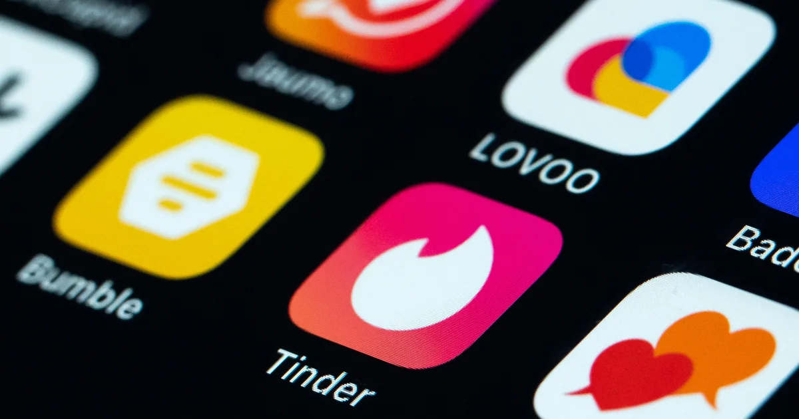
DataRizz: A Statistical Deep Dive into Dating Apps
In the modern age, where technology has become a staple in our lives, dating apps have grown in popularity and changed the way people meet, interact, and form connections. Millions of people use dating apps every day, swiping, liking, matching, and messaging to form potential connections and relationships. With the data available on dating apps, we can examine user demographics and identify trends in engagement and success rates.
Through these data visualizations, we uncover some connections between different user demographics, look into users’ overall opinions on dating apps, and figure out how people can find more matches and be more successful on dating apps. These findings aim to help us better understand dating apps and the people using them.
Sentiment Analysis on User Reviews
In this section, we perform sentiment analysis on Google Play reviews of three popular dating apps. The datasets are obtained from Kaggle at the following links:
Hinge:https://www.kaggle.com/datasets/shivkumarganesh/bumble-dating-app-google-play-store-review
Bumble:https://www.kaggle.com/datasets/shivkumarganesh/hinge-google-play-store-review
Tinder:https://www.kaggle.com/datasets/shivkumarganesh/tinder-google-play-store-review
We use VADER (Valence Aware Dictionary and sEntiment Reasoner), which produces a compound sentiment score. This score is categorized into three labels: positive (score > 0.05), negative (score < -0.05), and neutral (scores in between).
Positive words like "love," "great," and "amazing" contribute to a higher sentiment score, while negative words like "terrible," "disappointing," and "scam" lower the score. VADER is particularly effective for social media and short-text sentiment analysis because it considers punctuation, capitalization, and negations.
The results are visualized through sentiment distribution bar charts and time-series plots, helping us understand how user opinions have evolved over time.
| Hinge | Bumble | Tinder |
From the resulting plots, all three apps appear to show a general decline in sentiment across the analyzed period. One noteworthy dip coincides with the COVID-19 pandemic, potentially reflecting people’s frustration as they turned to dating apps during lockdowns. Many new users, unfamiliar with online dating dynamics, may have had unrealistic expectations or struggled with virtual interactions, leading to dissatisfaction.
Another possibility is that user sentiment may have declined due to evolving app features, monetization strategies, and algorithm changes that impact user experience. Frustrations over subscription costs, ghosting, or perceived inauthenticity in profiles could also contribute to negative reviews.
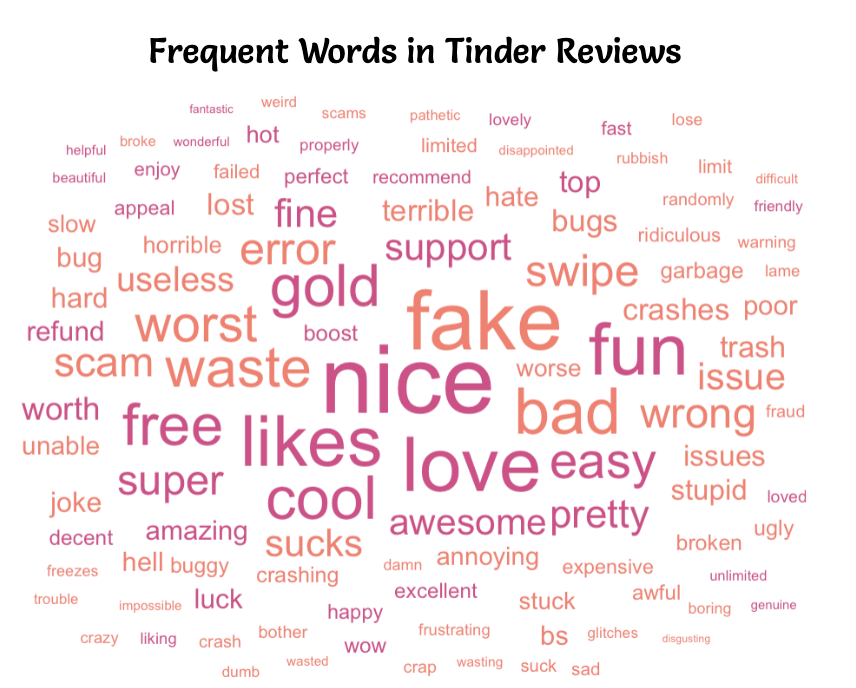
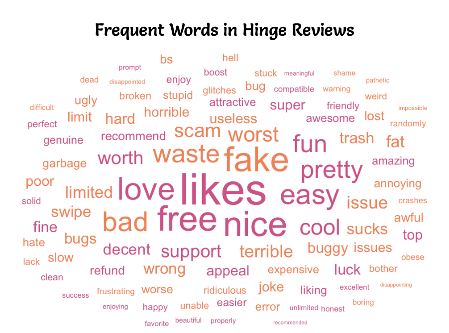
To dive deeper into user experiences with dating apps, we wanted to see what people are actually saying in their reviews. The word clouds below highlight the most frequently mentioned words in reviews for Tinder, Bumble, and Hinge, giving us insight into common praises and frustrations with the apps. Words with positive sentiment appear in pink, while negative sentiment words are orange.
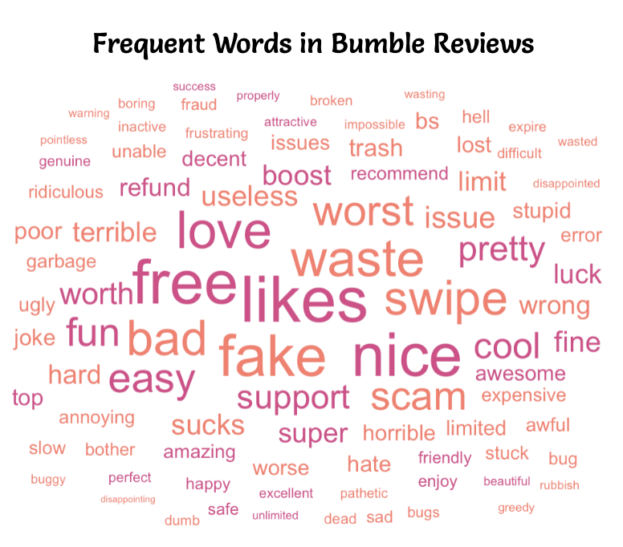
Across Tinder, Hinge, and Bumble, the most frequent words include "fake," "scam," "waste," "likes," "free," "issue," and "worst." This shows that users across all platforms are frustrated with bots and fake profiles. Additionally, the appearance of "free" alongside words like "waste" and "scam" suggests annoyance with app monetization, where users feel pressured to pay for features they believe should be free, such as being able to see likes.
For Tinder, technical issues seem to be a major frustration, with words like "crashes," "error," "bugs," "slow," and "issues" appearing more frequently than in reviews for the other two apps. However, despite these complaints, words like "fun," "cool," and "awesome" still show up, suggesting that many users enjoy Tinder’s experience even if it is glitchy.
Hinge reviews uniquely feature "support," "decent," and "recommend," suggesting that while users experience technical issues, they also recognize the app’s customer support. Additionally, words like "friendly" and "attractive" appear more frequently, revealing that users may see Hinge as a place for higher-quality matches and better interactions compared to the other apps.
Bumble reviews focus more on pricing and value than the other apps, with words like "boost," "refund," "expensive," "worth," and "pay." This suggests that users question the cost and value of premium features. Unlike Tinder, where engagement is higher, Bumble users mention "inactive," "wasting," and "unable," which suggests frustration with people not responding to messages.
Overall, while fake profiles, technical problems, and pricing frustrations are common across all three dating apps, each provides a unique experience. Tinder faces technical issues but remains engaging, Bumble receives the most negative reviews for pricing and inactive users, and Hinge, despite its bugs, stands out with more words related to attractiveness and positive interactions, suggesting a better quality of matches and conversations.
Most Common Profile on Dating Apps
The usage of dating apps has become more and more common over time, but who exactly is using these dating apps and what are they exactly looking for? Are people using dating apps just for some casual fun, or are they looking for their life-long partner? The following visualization shows a breakdown of the demographics of women on dating apps, starting with age ranges, then branching out into what type of relationship female users are looking for, and finally into their occupation. The top three occupations per branch are shown, while the rest are grouped into “Other” for the sake of readability.
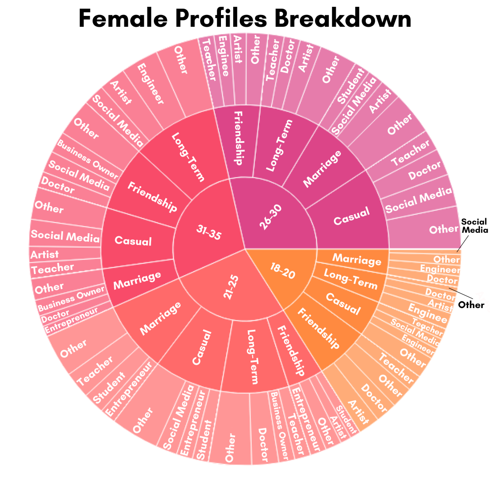
When examining the data on dating app profiles we gathered that the median age of women on dating apps is 27 and the average height is 5’5”. The most common interests are travel, music, and sports. Most women are looking to have children. The median education level is high school and the most common occupation for women on dating apps is artist. Next we look into male profiles. The next graph shows this same demographic breakdown for male users on dating apps.
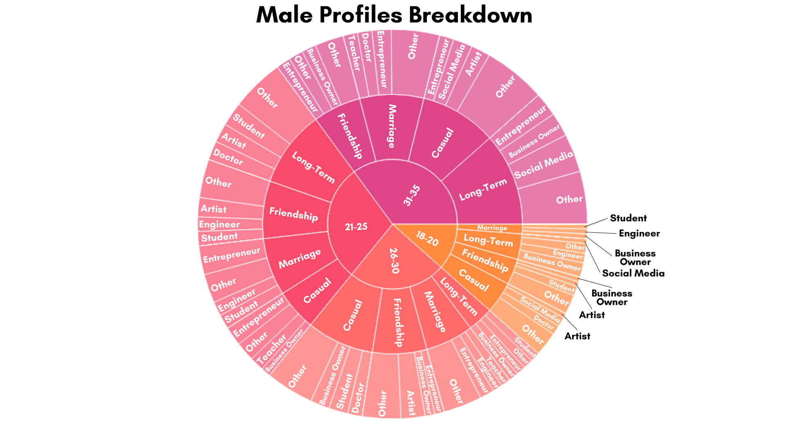
After some analysis on dating app data on male profiles, the median age is 28, with the median height being 5’6”. The most common occupation is entrepreneur, and the most common interests of men on dating apps are travel, hiking, and reading. Long-term relationships are the most sought after by men on dating apps, and most are not looking to have children. The median education level is a bachelor’s degree.
In general, we see that the most common age between men and women on dating apps is similar. A prominent difference between men and women on dating apps is that more men are looking for long-term relationships, while women are more often looking for something casual on dating apps. This could potentially explain why some users find it difficult to be successful on dating apps or have negative feelings towards these apps, since there is some discrepancy between what different genders are using dating apps for. The age distribution of women between 18-35 on dating apps is more even, while there looks to be a smaller proportion of men 18-20 years old and a larger proportion of men aged 21-25 and 31-35 years old. Given this data on user demographics, we will next examine relationships between different demographics to see if things such as age or education have an effect on how frequently people are using dating apps.
Demographics vs Online Dating Trends
Of course, you are here for the burning questions: What makes the perfect bio? How can I optimize my profile to get more swipes? We will definitely talk about strategies, but before that, we need insight. We need to understand the dating world in a little bit more detail. Driven by data, we now present to you stunning insights about dating app users: their demographics (age, gender, height and education) and their dating app usage trends (types of relationship desired, frequency of usage and number of swipes made).
We could bore you with our data wrangling process and get into the weeds of our statistical analyses, but we won’t. Instead, we introduce you to two dating app users, Alex and Beth. (However realistic we try to make them seem, these two are pure figments of our imagination, as the privacy of the users we collected data from are our utmost priority.)
Sitting at a red light in his Crosstrek, we have Alex, a 22 year old electrical engineer, fresh out of college. It is Friday afternoon, and he is heading home after a long day at work at a small biotech firm. Alex pulls out his phone and texts the girl he has just matched with on a dating app. He tells her to wear her swimsuit tomorrow — he’ll be taking her on his jet-ski. Alex has only used this dating app a few times this month and has already gotten a couple dates! Being 6’1, he is too far removed from the struggles of the short kings.
According to our data, Alex fits the mold:
Alex entered the workforce right out of college. He only started using the app recently, as he didn’t find the need to use it in college.
Alex is 22 years old. He is young and doesn’t feel like he is in any sort of rush. He only uses dating apps a few times a month.
Alex is an outdoor person. On the dating app, he is looking more for a female friend or companion who wants to join him in jet-skiing or hiking.
Alex is tall. When it comes to dating, he is more confident in himself than some of his friends. He doesn’t have a need to be constantly on the dating app, and so he uses it only a few times a month. But while on the app, he does not hesitate to swipe right on anyone he finds attractive!
Now, back at the city center, in a brain imaging lab, we find Beth, a 26 year old PhD student studying psychology. Beth sits herself down in the cafeteria to have her late lunch. As she pokes at the lettuce leaves with her fork, she pulls up the dating app on her phone and begins swiping away. She has been using this dating app for a year and a half, swiping daily, still looking for “the one”. Her lab partner passes by and jokingly asks if she’s working on her “side project”.
Likewise, Beth fits the mold as well:
Beth is a PhD student. She has been using the dating app for quite a few years to meet more people outside of her small research lab, hoping to find the love of her life.
Beth is 26 years old. She feels the pressure to find a long-term relationship.
Beth is more of an indoor person. She is not looking for just a companion to join her in sporting activities. Rather, she is looking for something serious.
Zooming out, here are the main insights about demographics and dating app usage habits that we have found.
Education Level vs Age of Usage: PhD students start using dating apps earlier than those with a Bachelor’s.
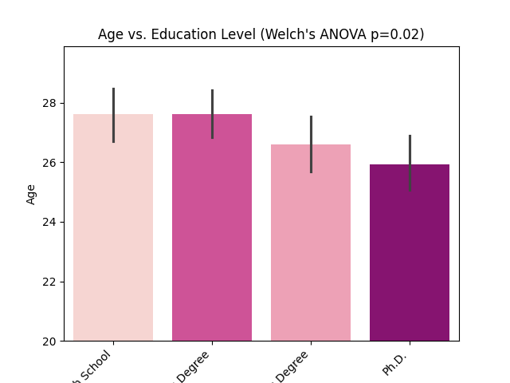
Age Group vs Type of Relationship Desired and Number of Swipes Made: The youngest group (18-22) look for casual friendships, while the oldest (30+) look for long-term commitments. The middle-age group (23-30) look for either or both, and swipe the most.
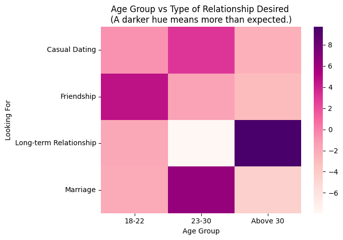
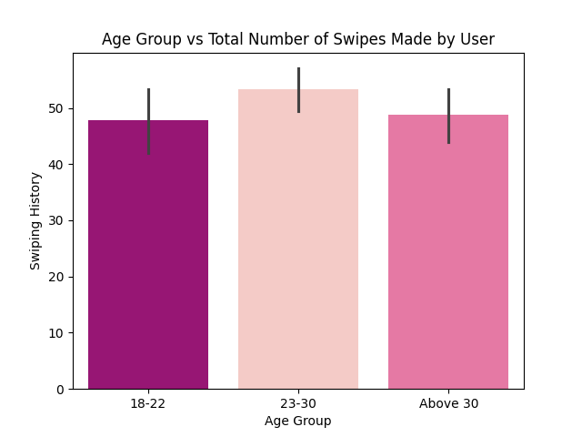
Outdoorsiness vs Type of Relationship Desired: Surprisingly, outdoor people look more often for friendships, while indoor people look for either casual relationships or more serious ones.
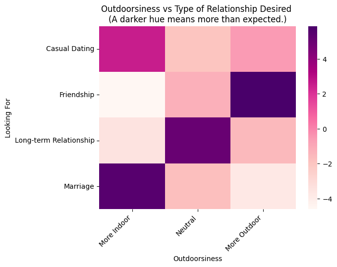
Men: Height vs. swipes made and frequency of app usage: shorter men make fewer swipes than taller men, but use the app much more frequently (daily rather than monthly). There is no comparable relationship for women.
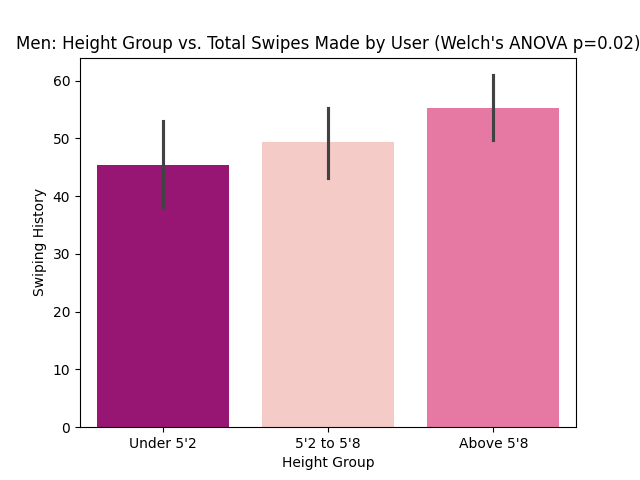
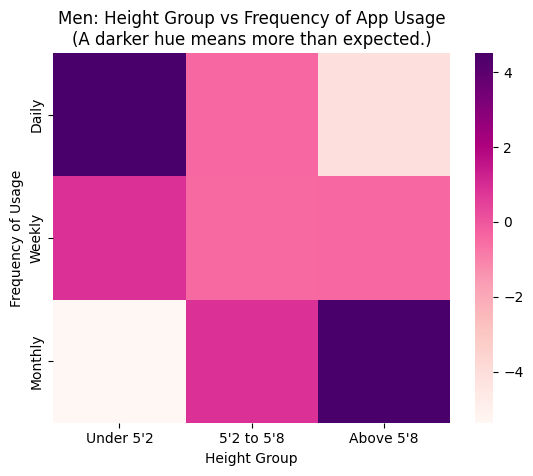
In summary: outdoor-oriented users are more likely to seek friendships, users in their twenties are the most active, and users over 30 are more likely to look for long-term relationships. PhD users begin using dating apps earlier than other education groups, while shorter male users tend to use the apps more frequently but swipe less often.
What Kinds of People Get the Most Engagement on their Dating Profiles?
Now that we’ve seen how Alex and Beth represent different dating app users—one swiping occasionally for adventure partners, the other searching daily for a long-term relationship—you might be wondering: Who actually gets the most attention on these apps?
While personality, preferences, and usage habits play a role, certain profile traits consistently attract more engagement. Whether you’re an Alex, a Beth, or someone in between, understanding these factors can help optimize your profile for maximum interaction.
Meet Kevin and Sophie: Two Users With Different Engagement Levels
Let’s meet Kevin and Sophie, two users who reflect the trends we've seen in Alex and Beth’s world.
Kevin, 22 | Outdoor, Chat-Focused, Casual Swiper
Kevin, much like Alex, is 22 years old, enjoys outdoor activities, and doesn’t take dating apps too seriously. He swipes occasionally, lives in a big city, lists “chatting” and “friendships” as his interests, has a verified profile, and uploaded 6 high-quality photos of his adventures. Kevin also speaks English, Spanish, and French. Kevin’s profile receives a lot of engagement.
Sophie, 27 | Indoor, Searching for Long-Term Commitment
Sophie, like Beth, is more serious about dating. She’s 27, a PhD student, and looking for a long-term partner. She marks her interest as “dating”, believing that clarity will help her find the right match. She lives in a small city, speaks only English, doesn’t have a VIP or verified profile, and has only one picture on their profile. Sophie’s engagement levels are lower than Kevin’s.
Six Factors Affecting Engagement on Dating Apps
1. Age & Engagement
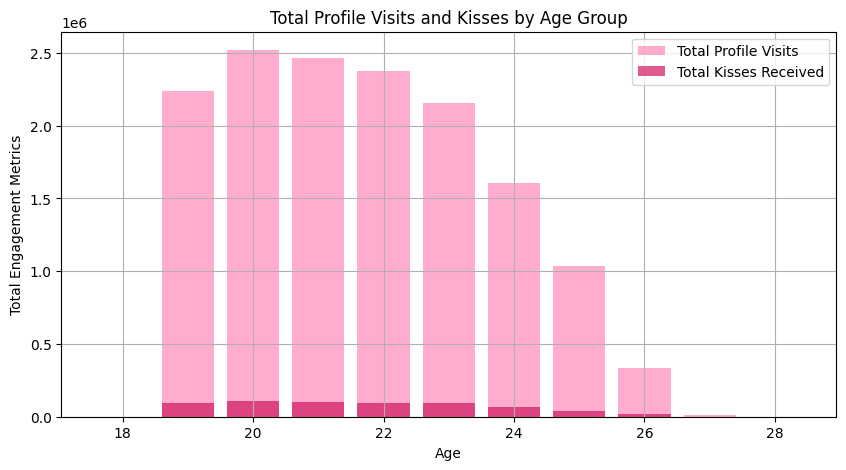
Users in their early 20s often receive the highest engagement, as profile visits and kisses generally peak around this age. The younger you are, the more attention you attract. After age 22, the number of profile visits and kisses received drops rapidly, meaning older users receive far fewer interactions. Kevin, who is 22, naturally gets more profile visits and kisses than Sophie who is 27. After age 25, engagement declines significantly, meaning that Beth and Sophie will need to work harder for interactions than Alex and Kevin.
2. Interest Type
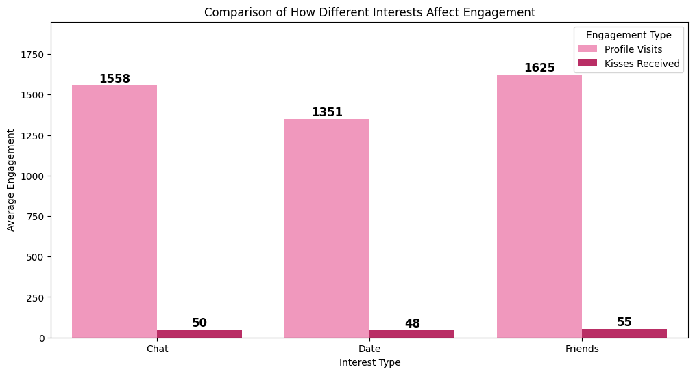
We see that users that signify they are more interested in being friends actually receive the most engagement. Users that choose chatting as their interest also receive a high amount of engagements, while users that choose dating as their interest receive the lowest profile interactions. This implies that users are more likely to interact with profiles that feel more low-pressure and open-ended. Kevin, who marked “Chat” and “Friends”, gets more swipes than Sophie, who marked “Dating”.
3. VIP & Verification:
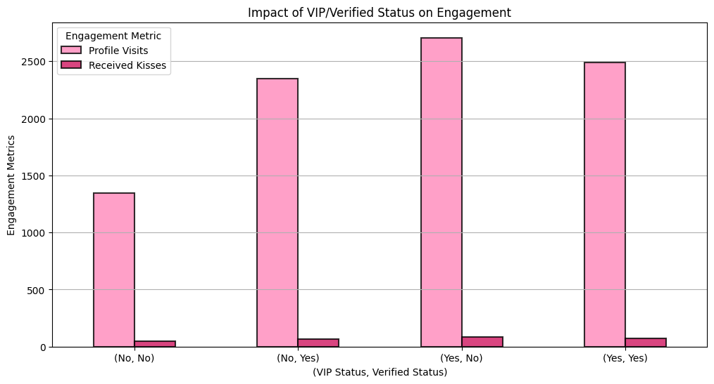
Many dating apps also offer VIP services. Our analysis suggests that users who have both VIP and verified status (Yes, Yes) receive the highest engagement, while users with neither VIP nor verified status (No, No) have the lowest engagement. Interestingly, users with only verification (No, Yes) receive more engagement than users with only VIP status (Yes, No).
This suggests that verification plays a stronger role in engagement than just having VIP alone—likely because users trust verified accounts more.
VIP users gain profile visibility on the platform, verification builds trust among users because it suggests that they are trustworthy. To maximize your visibility and engagement, become both a VIP and verified user.
Kevin, who got verified, sees more profile visits than Sophie, who is neither VIP nor verified.
4. Profile Pictures:
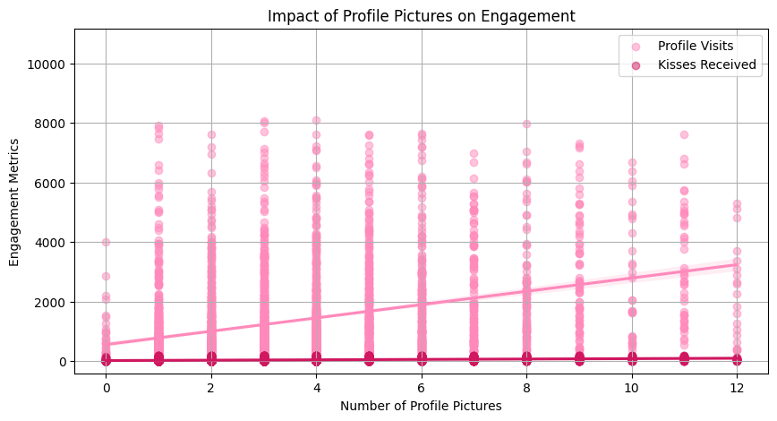
We also look at the impact of profile pictures on engagement metrics. The graph shows a positive correlation between the number of profile pictures and engagement. As the number of profile pictures increases, both profile visits and kisses received tend to rise. Users with 0 or very few profile pictures tend to have much lower engagement levels. While more pictures generally lead to higher engagement, the trend flattens slightly around 6 to 8 pictures. Kevin, who has 6 high-quality pictures, gets more profile visits than Sophie, who uploaded just one.
5. Distance:
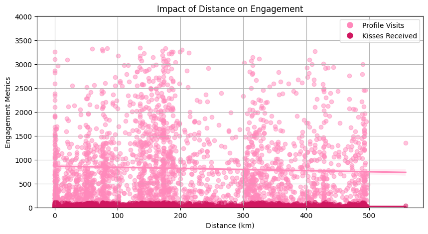
The highest concentration of profile visits and kisses received occurs at shorter distances. Users are more likely to engage with profiles that are geographically closer due to the feasibility of meeting in person. Within 100 kilometers, users receive the most engagement. Beyond 100 kilometers, the engagement levels drop significantly. We can see the regression line declines as distance increases. Adjust your location settings to impact engagement levels. Kevin, who lives in a major city, gets more swipes than Sophie, who is in a smaller town.
6. Languages Spoken:
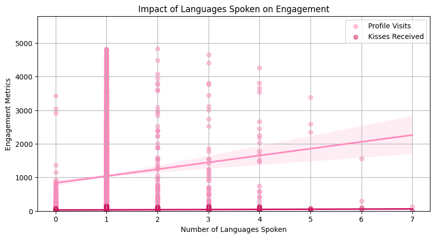
The regression line shows a positive correlation between the number of languages spoken and engagement metrics. This means that users who speak more languages tend to receive more engagement, suggesting that language diversity makes a profile more appealing. The highest engagement levels appear around users who speak 3 to 5 languages. This implies that speaking multiple languages helps, but after a certain point, after 6 languages, the engagement may plateau. There are still many data points for users who speak only one language, but bilingual and multilingual users will receive more engagement. If you speak multiple languages, showcase them on your profile to attract more matches. Kevin, who speaks English, Spanish, and French, sees more interaction than Sophie, who only listed English.
Final Insights: How to Build the Most Engaging Profile
From Kevin and Sophie’s experiences, here’s what we learned about who gets the most engagement:
Young users (early 20s) get the most attention.
Profiles listing “Friendship” or “Chat” as an interest receive the highest engagement.
VIP + Verification boosts engagement significantly.
More profile pictures = more profile visits & swipes.
Being closer in location increases engagement.
Speaking multiple languages attracts more interactions.
In all the factors we analyzed, we see that in the engagement metrics profile visits dominate the engagement metric, meaning that users may check profiles a lot but not interact further.
What Does This Mean for You?
If you're like Alex, taking a casual approach and focusing on friendships and fun, you’ll naturally receive strong engagement.
If you're like Beth, searching for a long-term commitment, be prepared for lower engagement and consider adjusting your profile to be more inviting.
If height is a concern, profile quality and engagement strategy still matter more than a single demographic trait.
Next time you update your dating profile, keep these factors in mind—and watch your engagement grow!
Conclusion
Dating apps are a relatively new form of meeting new people and forming relationships, and through our data analysis, we’ve been able to uncover trends in both demographics and user satisfaction. From the most common profile to behavioral patterns, these findings provide greater insight on how people are using dating apps. In combination with our findings on user reviews and sentiment, dating app developers could potentially improve their apps and better the overall user experience.
As online dating and dating apps continue to grow, with new ones being created and old ones getting refined, digging deeper into dating app data is crucial to understanding modern relationships and dating in a digital world.